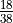
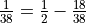
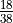
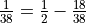

Review of Testability¶
This chapter presents some design rework and implementation rework for testability purposes. While testability is very important, new programmers can be slowed to a crawl by the mechanics of building test drivers and test cases. We prefer to emphasize the basic design considerations first, and address testability as a feature to be added to a working class.
In Test Scaffolding we’ll look at the basic software components required to build unit tests.
One approach is to write tests first, then create software that passes the tests. We’ll look at this in Test-Driven Design.
The application works with random numbers. This is awkward for testing purposes. We’ll show one approach to solving this problem in Capturing Pseudo-Random Data.
We’ll touch on a few additional topics in Testability Questions and Answers.
In Testability Deliverables we’ll enumerate some deliverables that will improve the overall quality of our application.
We’ll look a little more deeply at random numbers in Appendix: On Random Numbers.
Test Scaffolding¶
Without pausing, we charged past an elephant standing in the saloon. It’s time to pause a moment a take a quick glance back at the pachyderm we ignored.
In the Roulette Game Class we encouraged creating a stub Player class and
building a test that integrated the Game, Table, Wheel,
and the stub Player class into a kind of working application.
This is an integration test, not a proper unit test.
We’ve integrated our various classes into a working whole.
While this integration test reflects our overall goals, it’s not always the best way to assure that the individual classes work in isolation. We need to refine our approach somewhat.
Back in Wheel Class we touched on the problem of testing an application that includes a random number generator (RNG). There are two questions raised:
How can we develop formalized unit tests when we can’t predict the random outcomes? This is a serious testability issue in randomized simulations. This question also arises when considering interactive applications, particularly for performance tests of web applications where requests are received at random intervals.
Are the numbers really random? This is a more subtle issue, and is only relevant for more serious applications. Cryptographic applications may care more deeply about the randomness of random numbers. This is a large subject, and well beyond the scope of this book. We’ll just assume that our random number generator is good enough for statistical work. It must be consistently difficult to predict, but also as fair as the real world.
To address the testing issue, we need to develop some scaffolding that permits more controlled testing. We want to isolate each class so that our testing reveals problems in the class under test.
There are two approaches to replacing the random behavior with something more controlled.
One approach is to create a mocked implementation of
random.Randomthat returns specific outcomes that are appropriate for a given test.A second approach is to record the sequence of random numbers actually generated from a particular seed value and use this to define the expected test results. We suggested forcing the seed to be 42 with
wheel.rng.seed(42).
Test-Driven Design¶
Good testability is achieved when classes are tested in isolation
and there are no changes to the class being tested.
We have to be careful that our design for the Wheel class
works with a real random number generator as well as a mocked
version of a random number generator.
To facilitate this, we suggested making the
random number generator in the Wheel class visible. Rather than
have a Wheel instance use the random module directly, we
suggesting creating an instance of the random.Random class as an
attribute of each Wheel instance.
This design choice reveals a tension between the encapsulation principle and the testability principle.
By Encapsulation we mean the design strategy where we define a class to
encapsulate the details of it’s implementation. It’s unclear if the
random number generator is an implementation detail or an explicit part
of the Wheel class implementation.
By Testability we mean a design strategy where we can easily isolate each class for unit testing. This is sometimes achieved by using complex dependency injection. For testing, mock classes are injected; for real use, the real classes are injected. The dependency injection machinery in other languages is designed around the requirements of the compiler. Python doesn’t really need complex injection tools.
Generally, for must of the normal use cases, the random
number generator inside a Wheel object is an invisible implementation detail.
However, for testing purposes, the random number generator needs to be a configurable feature
of the Wheel instance.
One approach to making something more visible is to provide
default values in the constructor for the object. The following example
provides an rng parameter to permit inserting a mocked random
number generator.
Wheel with Complex Initialization
class Wheel_RNG:
def __init__(self, bins: List[Bin], rng: random.Random=None) -> None:
self.bins = bins
self.rng = rng or random.Random()
def choose(self) -> Bin:
return self.rng.choice(self.bins)
For this particular situation, this technique is noisy. It introduces a feature that we’ll never use outside writing tests. The choice of a random number generator is made infrequently; often the choice is made only once when a generator with desired statistical properties is identified.
Because Python type checking happens at run time, it’s easier to patch a class as part of the unit test.
Here’s a simpler Wheel class definition with simpler
initialization.
Wheel with Simpler Initialization
class Wheel:
def __init__(self, bins: List[Bin]) -> None:
self.bins = bins
self.rng = random.Random()
def choose(self) -> Bin:
return self.rng.choice(self.bins)
Since we can inject anything as the random number generator in a Wheel instance,
our unit tests can look like this:
Mock Object Testing
def test_wheel_isolation():
mock_rng = Mock(
choice=Mock(return_value="bin1")
)
bins = ["bin1", "bin2"]
wheel = Wheel(bins)
wheel.rng = mock_rng # Replaces random.Random
value = wheel.choose()
assert value == "bin1"
mock_rng.choice.assert_called_with(bins)
This function creates a mocked instance of the random.Random class.
The mock defines a choice() method; this method always returns
the same value.
The test case builds a number of mocked Bin instances. In this
case, we don’t even use the Bin class definition, we can use
a simple string object.
The Wheel instance is built from the mocked bins. The rng
attribute is then patched to use the mocked random number generator.
After the patch is applied, we can exercise the Wheel.choose() method
to confirm that it properly uses the random number generator’s choice()
method.
Capturing Pseudo-Random Data¶
The other approach – using a fixed seed – means that we need to build and execute a program that reveals the fixed sequence of spins that are created by the non-random number generator.
We can create an instance of Wheel class. We can set the
random number generator seed to a known, boring value, like 42.
When can call the Wheel.choose() method six
times, and print the winning Bin instances. This
sequence will always be the result for a seed value of 42.
This discovery procedure will reveal results needed to
create unit tests for Wheel class and anything that uses
it, for example, Game.
Repeatable Random Sequences
"""
Building Skills in Object-Oriented Design V4
Demo of repeatable random tests.
"""
import random
from collections import Counter
def dice():
return random.randint(1,6), random.randint(1, 6)
def dice_histogram(seed: int=42, samples: int=10_000) -> Counter:
"""
Generate a lot of random numbers.
>>> c = dice_histogram()
>>> c.most_common(5)
[(7, 1704), (8, 1392), (6, 1359), (9, 1116), (5, 1094)]
"""
random.seed(seed)
c = Counter(
sum(dice()) for _ in range(samples)
)
return cTestability Questions and Answers¶
Why are we making the random number generator more visible? Isn’t object design about encapsulation?
Encapsulation isn’t exactly the same thing as “information hiding”. For some people, the information hiding concept can be a useful way to begin to learn about encapsulation. However, information hiding is often taken to extremes.
In this case, we want to encapsulate the bins of the wheel and the procedure for selecting the winning bin into a single object. However, the exact random-number generator (RNG) is a separate component, allowing us to bind any suitable RNG.
Consider the situation where we are generating random numbers for a cryptographic application. In this case, the built-in random number generator may not be random enough. In this case, we may have a third-party Super-Random-Generator that should replace the built-in generator. We would prefer to minimize the changes required to introduce this new class.
Our initial design has isolated the changes to the
Wheelclass, but required us to change the constructor. Since we are changing the source code for a class, we must to unit test that change. Further, we are also obligated unit test all of the classes that depend on this class. Changing the source for a class deep within the application forces us to endure the consequence of retesting every class that depends on this deeply buried class. This is too much work to simply replace one object with another.We do, however, have an alternative. We can change the top-level
main()method, altering the concrete object instances that compose the working application. By making the change at the top of the application, we don’t need to change a deeply buried class and unit test all the classes that depend on the changed class. Instead, we are simply choosing among objects with the same superclass or interface.This is why we feel that constructors should be made very visible using the various design patterns for Factories and Builders. Further, we look at the main method as a kind of master Builder that assembles the objects that comprise the current execution of our application.
See our Roulette Solution Questions and Answers FAQ for more on this subject.
Looking ahead, we will have additional notes on this topic as we add the SevenReds Player Class subclass of
Playerclass.
If setting the seed works so well, why use a mock object?
While setting the seed is an excellent method for setting up a test, it’s not actually a unit test. The
Wheelis not used in isolation from other classes.
Why use 42 for a seed?
It’s mentioned in Douglas Adams’ The Hitchhiker’s Guide to the Galaxy. There are several boring numbers that are good choices because the numbers are otherwise mathematically uninteresting.
Testability Deliverables¶
There are two deliverables for this exercise. All of these deliverables need Python docstrings.
Appendix: On Random Numbers¶
Random numbers aren’t actually “random.” Since they are generated by an algorithm, they are properly called pseudo-random. The distinction is important. Pseudo-random numbers are generated in a fixed sequence from a given seed value. Computing the next value in the sequence involves a calculation that is expected to overflow the available number of bits of precision leaving apparently random bits as the next value. This leads to results which, while predictable, are arbitrary enough that they pass rigorous statistical tests and are indistinguishable from data created by random processes.
We can make an application more predictable by selecting a specific seed value. This provides reproducible results.
We can make an application less predictable by choosing a very
hard to predict seed value.
In most operating systems a special “device” is
available for producing random values. In Linux this is typically
/dev/random. In Python, we can access this through
the os.urandom() function as well as the secrets module.
When we need to make an application’s output repeatable, we set a known seed value. For testing purposes, we can note the sequence of numbers generated and use this to assure a repeatable test.
We can also write a short demonstration program to see the effect of setting a fixed seed. This will also give us a set of predictable answers for unit testing.
Looking Forward¶
We’ve built a simple, prototype Player class definition.
This player only places a limited number of bets. The house edge
in Roulette assures us that the play will, before long, run
out of money.
A bet on black pays winnings as if the probability of winning were  .
The actual probability is . The difference,
, tells us
that the expected number of spins is 38 before the player is out of
money.
.
The actual probability is . The difference,
, tells us
that the expected number of spins is 38 before the player is out of
money.
There’s little that can be done in the real world. We can, however,
simulate the variety of creative ways people apply fallacious reasoning
to try and prevent this inevitable loss. We’ll start with a general Player
class and then implement a number of stateful algorithms
for betting.